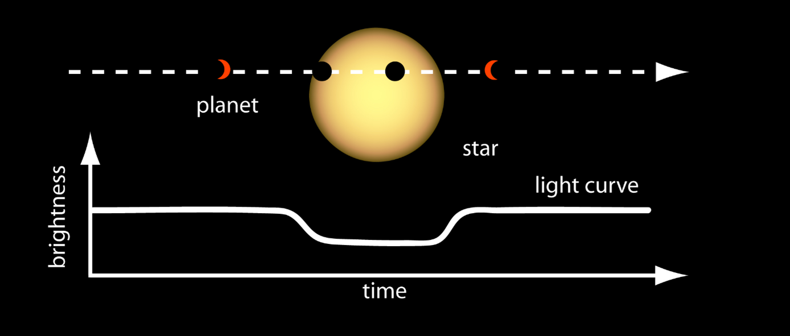

GPR-Studio — GIS and Ground-Penetrating Radar
Desktop application for large-scale ground-penetrating radar processing and geospatial visualization of pavements and linear infrastructure.

Computer engineer · MSc in Astrophysics and Observational Techniques
Desktop application for large-scale ground-penetrating radar processing and geospatial visualization of pavements and linear infrastructure.
Language-model and clustering platform to query production data, segment machinery and review technical specifications in natural language.

Digital twin and CP-SAT optimizer for a segment and beam plant. It builds realistic Gantt charts under physical, staffing and supply constraints.

Research on deep-learning techniques to identify exoplanets from astronomical data.

Algorithm that detects change and dynamics on the Earth's surface from satellite data.